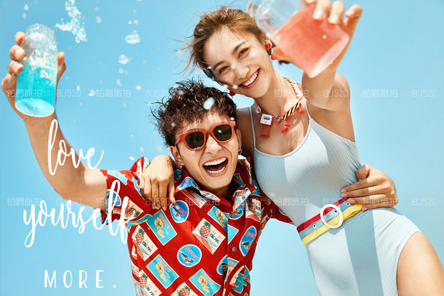
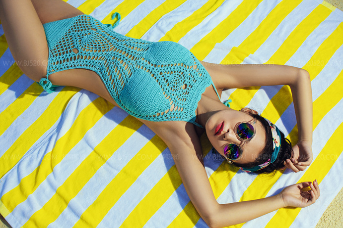

比基尼婚纱照应该怎么拍？性感比基尼婚纱照怎么拍好看?
作者：猫 更新：2019-05-18 14:11:07 阅读量：3
对于比基尼婚纱照，很多比较开放的年轻人会选择拍这一系列的，毕竟比较性感时尚，而人的一生能够拍摄这么一组比基尼婚纱照，还是不错的，比较有价值，那么在这里我就建议大家选择铂爵旅拍，服务好，技术好，满足你的所有要求!
比基尼婚纱照
比基尼婚纱摄影技巧：比基尼婚纱照怎么拍一、注意采光。光的不同会使拍摄出的画面产生不同的效果，能够能够影响到整体画面的好坏。拍婚纱照一般光源分为两种: 顺光和逆光。顺光是指光的方向来源于摄影师方向，顺着摄像机拍摄;相反逆光的光源是对着摄像机镜头的，其中逆光是最适合拍摄唯美浪漫的比基尼婚纱照。
二、利用反光板。在拍摄室外婚纱照时，反光是最常见的，但是由于闪光灯不易控制，这时最好的选择便是利用反光板。反光板的尺寸大小各有不同，方便摄影师拍摄携带，反光板可以使肤色到达古铜色的效果，是大部分新人喜欢选择的道具之一。
三、摆好姿势。新人在拍摄比基尼婚纱照前，可以请摄影师为你们提供一些时装杂志作为当代最流行的姿态，并对不同的姿态进行相应的指导。对于不同的新人而言，选择不同的姿势，可以将最美丽的形态展现出来。

比基尼婚纱照
性感比基尼婚纱照怎么拍好看?
1、半裸，常人理解的性感一般就是衣着暴露一些，穿比基尼、透视装等，当然也要身材好看穿出来才是吸引人的。裸背、裸腿都是极为性感的，新娘子拍照时，穿轻薄的婚纱，红色带子分别环绕着四肢，唯美又性感;
2、侧躺，一把长椅就可以摆出妖娆又迷人的性感姿势，如同美人鱼般侧躺在长椅上，两腿交叠，女性最诱惑的画面妩媚动人，非常直观的展现的女人身材的优势;
3、秀美腿，很多女人都希望自己有一双美腿，笔直又修长的大长腿可惜只长在模特身上，在拍性感婚纱照时，一定要秀出自己的美腿，即使腿长得不够美也可以通过拍照的角度来改善的。
比基尼婚纱照的拍照两大要点：
一、角度1、把头部稍向上仰，鼻子看起来会显得较小。把鼻子对着比镜头稍高一点的位置，可使脸部轮廓看起来更美，并减少眼睛下部的阴影。
2、自然的站直、挺直腰背，那么长腿、臀部曲线自然会出来，表情也会随着神采奕奕。
3、身体可以略前倾，如此一来，脸部的视觉会更加有立体感，整个脸庞面积会相对地缩小。
4、脸颊尽量呈45度或65度微侧面，如此脸蛋看起来会更小，轮廓更明显。
5、如果你不了解自己最美的一面，那么就让拿相机的人别嫌麻烦，多换角度，要拍一张换一个角度，准有一张是好看的。
6、如果是在婚礼现场亲友拍照留念，金夫人婚纱摄影官网建议尽量把脸的位置放在别人后面一点儿的位置，这样虽然“陷害”了同伴，但你的脸会显得小一些。
二、表情1、想象自己是最漂亮的人，不要老担心自己样子不好看，一定要神情放松，充满自信。
2、微笑是最上镜的表情，但婚纱照里最好别大笑，以免双眼周的细纹明显，失了仪态。
3、收紧下巴，让脸孔呈现出优雅的姿势，眼神略微由下往上看，会更加炯炯有神，眼睛更大。
4、通过自己的方式让下巴变尖，可以是简单的稍扬嘴，有的人会动耳朵，当你把耳朵提起来的时候，下巴也同时尖出来了。
5、通常专业模特都会用舌头顶着上颚前牙齿的背面，这样会令嘴部和脸下部更好看。
比基尼婚纱照
以上就是关于比基尼婚纱照的相关内容了，对于拍摄方法及一些技巧，相信很多朋友看都都掌握了吧?最后希望你们幸福甜美，跟婚纱照的笑容般甜蜜!